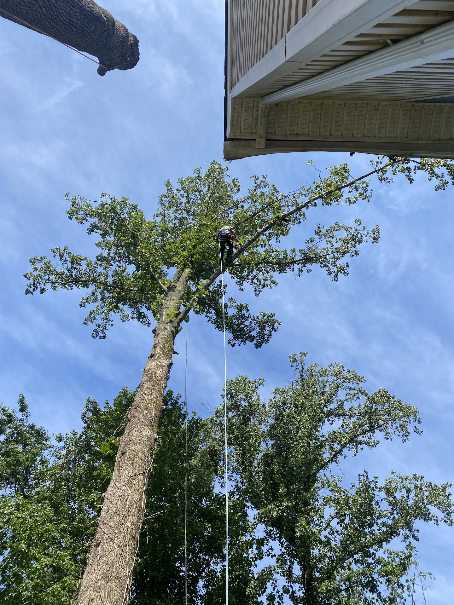

A cavity you didn't notice before. A large limb that looks different after the last storm. A tree leaning closer to the house every year. Barton's Tree Care evaluates trees so you understand what you're looking at — before deciding on next steps.
When a tree shows visible signs of change — a new crack, an enlarging cavity, a shift in lean — the question isn't always whether to remove it. It's whether to understand it first. Tree risk depends on the condition of the tree, its structure, the surroundings, and what's within reach if something were to fail. A risk assessment looks at those factors together and helps determine whether there's a genuine concern and, if so, what an appropriate next step looks like. That step isn't always removal — it might be pruning a specific limb, monitoring the tree over time, or in some cases, taking no action at all. Barton's Tree Care provides free tree risk assessments for residential properties throughout Crofton, MD and the surrounding Maryland communities. If a situation appears immediately dangerous, see our emergency tree service.
These are the types of conditions and site factors we consider when evaluating a tree. No single indicator tells the whole story — context matters.
Cavities, cracks, splits, and codominant stems with included bark affect the structural integrity of a trunk or major limb. We look at the size, location, and extent of any defect — not just whether it's present, but what it means for that specific tree and its position on the property.
Dead wood that remains in the canopy, partially broken limbs, or limbs that have been suspended by other branches are direct hazards. How significant depends on the size of the limb and what's underneath it — a dead branch over an open field is a different situation than one over a roof or driveway.
A gradual lean that predates any storm may simply be how the tree has grown. A lean that has recently increased or appeared after weather warrants a closer look. We also look at the root zone — soil heaving, exposed surface roots, and grade changes near the base can indicate root stress or failure.
A tree's condition becomes more significant when it stands over a home, garage, vehicle, driveway, or utility line. We consider what the tree could affect in the event of partial or full failure. The same defect carries different weight depending on what's within reach.
A useful assessment isn't a generic checklist — it's a conversation about your tree, your property, and your situation.
We start with your question. What specifically caught your attention — a crack, a lean, a limb that looks off, something you noticed after a storm? That context matters. It tells us where to focus the evaluation and what kind of change may have occurred.
We look at the tree: trunk condition, major limb structure, canopy health, root zone, and any visible defects. We also look at the surroundings — what the tree could affect if something were to fail and how that changes the picture. No two sites are identical, and the context is part of the evaluation.
We tell you what we observed and what we think it means. That might lead to a recommendation to prune a specific limb, keep an eye on the tree over time, move forward with removal, or in some cases take no action. The goal is to give you enough information to make a well-grounded decision.

A tree's condition doesn't tell the whole story. What matters is the condition of the tree and what's around it. A cavity in an oak at the edge of an open field is a different situation than the same cavity in a tree positioned directly over a driveway, roof, or fence line. An assessment takes both into account.
Storm damage can compound an existing concern — a limb that showed early signs of decay before a storm may be worth a closer look after one. When an assessment leads to a recommendation, Barton's can handle the work: pruning a specific limb, structural work, or removal if that's what the situation calls for. You don't start over with a new company.
Call (410) 710-0164A useful tree assessment requires genuine experience with trees, not just a quick walk around the property. Barton's has been evaluating and working trees in Maryland since 1989.
Ed Barton III has been doing tree work in Maryland since 1989. Evaluating trees — for condition, structural concerns, and appropriate next steps — is part of how Barton's has approached every job throughout Anne Arundel County for over three decades.
We hold MD Tree Expert License #133 & #1883. You're working with licensed professionals who carry appropriate insurance — not a crew with no verifiable credentials evaluating a tree that could affect your home or property.
Barton's Tree Care is based in Crofton, MD and serves Crofton and the surrounding Maryland communities — Gambrills, Odenton, Davidsonville, Annapolis, Edgewater, Severna Park, and beyond. We know the area and the trees in it.
Answers to the questions property owners most commonly ask before scheduling a tree evaluation.
Call Barton's Tree Care for a free tree risk assessment. Based in Crofton, MD, serving Maryland since 1989.
Owner Direct: (443) 306-3037